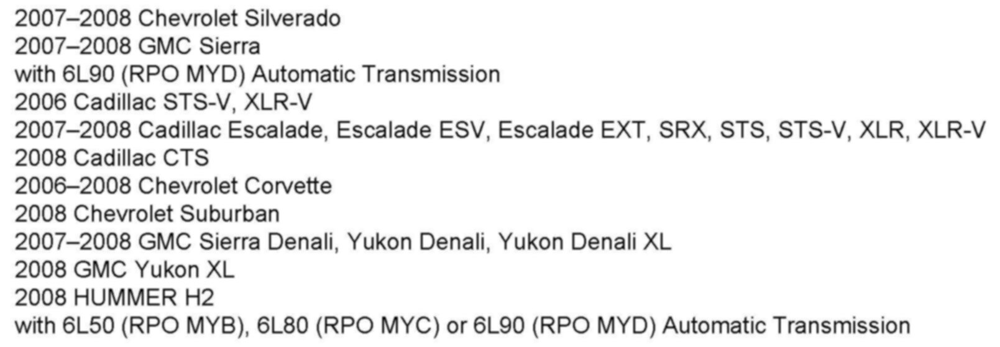
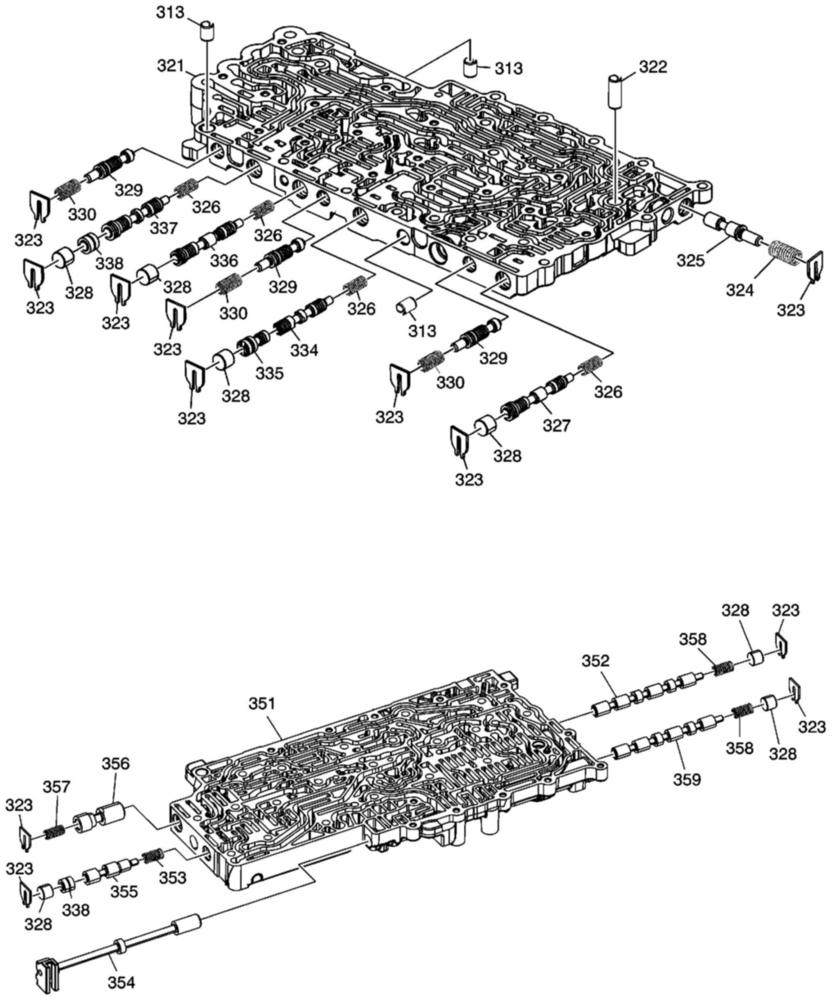
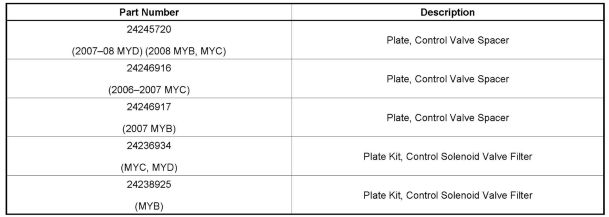

A/T - MIL ON/DTC P0751 Is Stored In Memory
TECHNICALBulletin No.: 07-07-30-031D
Date: February 20, 2009
Subject:
Malfunction Indicator Lamp (MIL) On - Check Engine Light, DTC P0751 (Diagnose and Repair as Necessary)

Models
Supercede:
This bulletin is being revised to provide additional information on the new spacer plate. Please discard Corporate Bulletin Number 07-07-30-031C (Section 07 - Transmission/Transaxle).
Condition
Some customers may comment on a malfunction indicator lamp (MIL) being illuminated.
A scan tool may reveal DTC P0751 set in the TCM as current or in history.
Correction
Follow the service instructions below based on the group your vehicle is in.
2007 Silverado or Sierra with 6L90 Transmission (MYD)
1. Inspect and note the transmission fluid level and condition. If the level is high or low, it should be corrected and the vehicle road tested to verify that the condition is still present.
2. Remove the transmission bottom pan to inspect for possible debris.
^ If debris is found, the transmission should be disassembled to determine the source. Repair or replace the transmission in the most economical method following guidelines in Corporate Bulletin # 02-07-30-029.
^ If no debris is noted in the oil pan, remove the control valve body assembly and proceed to the next step.
3. Disassemble the valve body to:

^ Inspect transmission filter for any cracks, holes or split seams that may allow air to be sucked into the pump.
^ Inspect the check balls for roundness ensuring that there are no flat spots.
^ Measure all the valve body bore plugs (328) for diameter. The specification is 11.502 mm +/- 0.004 mm. Undersize bore plugs should be replaced.
^ Inspect clutch select valve 2 (352) (Closest to the manual valve) in the lower valve body (351) for freedom of movement and travel.
^ Inspect CBR1/ C456 Reg Valve (327) in the upper valve body (321) for freedom of movement and travel.
^ Perform Control Solenoid Valve and Transmission Control Module Assembly Solenoid Performance Test (SI Document ID # 1618572) to determine if shift solenoid # 1 is functioning properly.
Important:
The seals included in plate kit, P/N 24236934, should be replaced when the valve body is assembled. Do not reuse the old seals.
^ Replace the spacer plate with P/N 24245720. This spacer plate makes use of a revised gasket to help reduce the occurrence of DTC P0751.
Important:
2008 Silverado or Sierra equipped with 6L90 (MYD) are built with this TCM calibration revision.
4. Reprogram the transmission control module (TCM) with updated calibration files using the TIS2WEB Service Programming System (SPS) application. This new service calibration was released with TIS satellite data update version 7.5 or later, available July 22, 2007. As always, make sure your Tech 2(R) is updated with the latest software version.
5. After reprogramming the TCM, Service Fast Learn Adapts must be performed using the Tech2(R). Check and clear all DTCs that may have set as a result of the programming process.
2006-2008 Vehicles with a 6L50, 6L80 or 6L90 Transmission (MYB, MYC or MYD) (Except 2007 Silverado and Sierra w/6L90)
1. Inspect and note the transmission fluid level and condition. If the level is high or low, it should be corrected and the vehicle road tested to verify that the condition is still present.
2. Remove the transmission bottom pan to inspect for possible debris.
^ If debris is found, the transmission should be disassembled to determine the source. Repair or replace the transmission in the most economical method following guidelines in Corporate Bulletin # 02-07-30-029.
^ If no debris is noted in the oil pan, remove the control valve body assembly and proceed to the next step.
3. Disassemble the valve body to:
^ Inspect transmission filter for any cracks, holes or split seams that may allow air to be sucked into the pump.
^ Inspect the check balls for roundness ensuring that there are no flat spots.
^ Measure all the valve body bore plugs (328) for diameter. The specification is 11.502 mm +/- 0.004 mm. Undersize bore plugs should be replaced.
^ Inspect clutch select valve 2 (352) (Closest to the manual valve) in the lower valve body (351) for freedom of movement and travel.
^ Inspect CBR1/ C456 Reg Valve (327) in the upper valve body (321) for freedom of movement and travel.
^ Perform Control Solenoid Valve and Transmission Control Module Assembly Solenoid Performance Test (SI Document ID # 1618572) to determine if shift solenoid # 1 is functioning properly.
Important:
The seals included in plate kit, P/N 24236934 or 24238925, should be replaced when the valve body is assembled. Do not reuse the old seals.
^ Replace the spacer plate with the appropriate part number from the list below. This spacer plate makes use of a revised gasket to help reduce the occurrence of DTC P0751. This spacer plate is used in vehicles built November 17, 2007 or later. It will not resolve a DTC P0751 concern on a vehicle built November 17, 2007 or later.

Parts Information
Warranty Information
For repairs performed under warranty, use the applicable published labor code.

Disclaimer